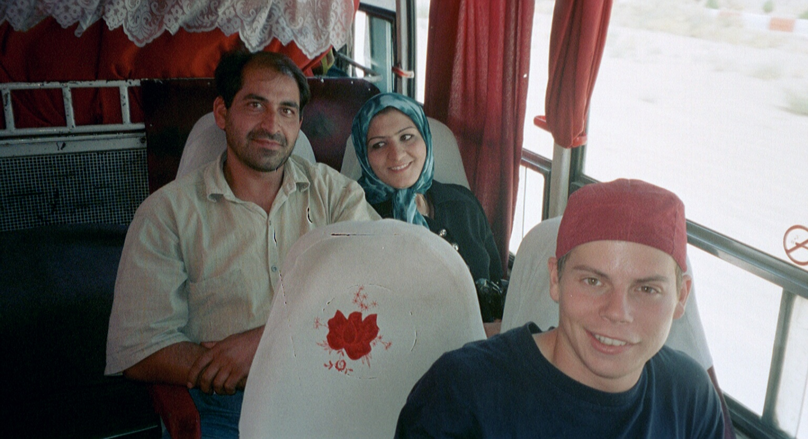
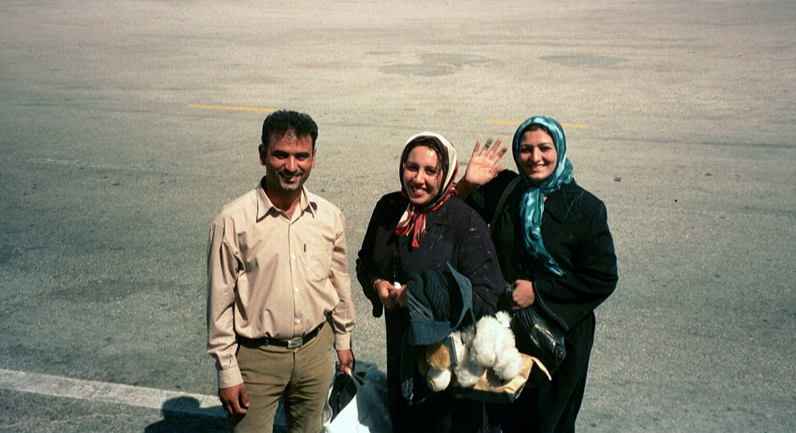

Busreise nach Shiraz
Donnerstag, 25. September
Weit hoch herrlich der Blick 1.
Wir hatten uns auf eine ermüdende Busreise eingestellt, bekamen aber unterwegs so viel zu sehen, dass uns die Zeit nicht lang wurde. Von der Wüste Kavir herkommend, überquerten wir ein weiteres Mal das Zagrosgebirge und sahen in raschen Wechseln noch einmal all die landschaftlichen Szenerien an uns vorbeiziehen, die das Reisen im Iran so speziell machen. Die Streckenprofil glich dem einer Pyrenäenetappe an der Tour de France. Rauf und runter ging’s; von Hochebenen aus waren Bergketten-Barrieren zu überqueren; von einem Augenblick zum nächsten folgten rasante Talfahrten. Einmal wand sich die Strasse in Kehren zu einem Pass hoch wie auf den letzten Kilometern vor der Grimsel.
Eines der höchsten Gefühle: hier auf den Velos unterwegs zu sein. Es blieb bei der Wunschvorstellung. Hier hätten wir oft in den ganz kleinen Gänge fahren und den Kreislauf aufs Äusserste belasten müssen, aber das Ankommen auf den Höhen wäre Entschädigung genug gewesen. „Weit hoch herrlich der Blick!“ Und dann die Fahrt hinunter in die nächste Senke – mit vom Hochgefühl immer noch rasendem Puls.
Die Wechsel von Wüste zu Halbwüste, aber plötzlich auch wieder zu sattgrünen Ebenen; das war nicht neu, aber auf dem Weg nach Shiraz variationsreicher. In den Anbaugebieten bekamen wir nochmals den Reichtum der Möglichkeiten zu sehen: Pistazien, Tomaten, Weizen, Mais, Obst, Zitrusfrüchte, Reis, Gemüse, … Auch die ganze Farbpalette war da, stets im Kontrast zu den im Hintergrund aufragenden braun-grauen Gebirgszügen.
Das Wasser für die ausgedehnten Felder liefern Flüsse und Qanate (siehe Bericht vom 23. September), oder es wird mit Grundwasserpumpen gefördert. Uralte und moderne Techniken der Bewässerung finden sich jeweils fast unmittelbar nebeneinander.
Seit wir uns im zentralen Hochland Irans aufhielten, beobachteten wir eine rege Bautätigkeit – besonders im Tiefbau. Zahlreiche Verbindungsstrassen zwischen den Städten werden zu Autobahnen ausgebaut oder durch solche ersetzt. Die neuen Trasses, denen wir entlang fuhren, waren oft 50-100 km lang. In den kommenden Jahren dürften Aberhunderte von neuen Highway-Kilometern dem Verkehr übergeben werden. Dabei sind die bestehenden Fernstrassen in gutem Zustand; sie vermögen dem Verkehrsvolumen durchaus zu genügen. Denkbar ist, dass man mit möglichst vielen richtungsgetrennten Strassen die Unfallzahlen senken will. – Eine Besonderheit besteht übrigens darin, die eine Hälfte der Autobahn in einiger Entfernung von der andern zu führen, und zwar, wie uns schien, keineswegs immer topografischer Gründe wegen. Dass man auf iranischen Autobahnen manchmal während längerer Zeit die Gegenfahrbahnen nicht sieht, kann auch ganz schön irritieren. Plötzlich erschrickt man! Weil man sich hin und wieder unwillkürlich fragt, ob das, worauf man gerade fährt, tatsächlich eine Autobahn ist, erwartet man den Gegenverkehr auf der eigenen Spur.
Die Reise nach Shiraz bleibt uns auch der Mitreisenden wegen in besonderer Erinnerung. Neben und hinter uns sassen zwei junge Ehepaare, die schon kurz nach Yazd den Kontakt zu uns herstellten. Viel mehr als 20 englische Wörter sprachen sie nicht, und da wir die Farsi-Kenntnisse nicht wie erhofft erweitert hatten, war das Kommunizieren schwierig. Trotzdem entwickelte sich ein lebhaftes Hin und Her, ein von viel Gestik gestützter Informationsaustausch. In Gang gesetzt wurde er anfänglich nonverbal: Wir bekamen Pistazien, Baumnüsse, getrocknete Melonenkerne und dgl. Knabberzeug und schliesslich aus Thermoskrügen sogar Tee gereicht. Da wir selber nur wenig Proviant im Rucksack hatten und es Stunden dauerte bis zum ersten Verpflegungshalt, nahmen wir die uns zugedachte Rolle gerne an.
Zumindest eines der beiden Paare war auf der Hochzeitsreise. Jedenfalls wurde uns bald ein Album mit Hochzeitfotos herübergereicht, so dass wir nun (nachdem uns in Esfahan die Braut vorenthalten worden war) ein erstes Mal iranische Bräute betrachten konnten. Erstaunlich, wie offenherzig besonders die eine auf den Fotos ihre Reize zeigte. Das schien sie auch nachträglich noch mit Stolz zu erfüllen, beobachtete sie uns doch erwartungsvoll, als wir das Album durchblätterten. Und sie war es auch, die auf einmal eine Videokamera in der Hand hielt und uns ausgiebig filmte. Dass sie dabei die Linse besonders auf Manuel richtete, war nicht zu übersehen. Gut war, dass sie (genauso wie er) am Fenster sass, so dass der 2-Meter-Abstand für die notwendige Sicherheit sorgte. Während Manuel bei den Avancen gelassen blieb, freute sich der Ehemann am beinahe überschäumenden Interesse seiner Frau am jungen Fremden.

In einer Kleinstadt etwa 120 km vor Shiraz verliessen uns die beiden Paare; sie waren am Ziel. Bevor der Bus die Haltestelle erreichte, versuchten sie uns zu überreden, ebenfalls auszusteigen. Sie wollten uns bei sich zu Hause als Gäste beherbergen. – Auch wir hatten vorher unsere Familienfotos herumgereicht, Schweizer Ansichtskarten verteilt und schliesslich Adressen ausgetauscht, aber jetzt mussten wir irgendwie auf die Bremse treten. Wenn wir das spontane Angebot annahmen, wann würden wir dann nach Shiraz kommen? Wir lehnten deshalb mit Bedauern ab, mit dem Bedauern derjenigen nämlich, die nur noch wenige Tage im Iran blieben und darum in Zeitnot kommen würden. – Alle vier zeigten viel Emotionen beim Abschiednehmen. Aussenstehende hätten meinen können, hier würden langjährige enge Freunde einander adieu sagen. Auch die Frauen reichten uns die Hände. Niemand im Bus schien sich daran zu stossen, dass sie sich über die Verhaltensregeln hinwegsetzten. Draussen traten sie wieder an den Bus heran und griffen nach unseren Händen (die wir ihnen durch die kleinen Fensteröffnungen entgegenstreckten). Auch wir waren ziemlich gerührt.

Dass die andere Buspassagiere das ungewohnte Verhalten guthiessen, zeigte sich später daran, dass einzelne von ihnen in die frei gewordene Rolle schlüpften, uns auf dem letzten Streckenteil mit Speis und Trank zu versorgen.
Im Volksmund wird die Provinzhauptstadt Shiraz die Stadt der Liebe, der Rosen und der Nachtigallen genannt. Hier lebten die beiden berühmtesten persischen Dichter, Saadi und Hafiz. Aus ihren Werken spricht eine Atmosphäre der Freude, des Charmes. Vieles davon scheint in die Lebensart der Shirazerinnen und Shirazer übergegangen zu sein, und zwar nicht zufällig, denn wie tief z.B. Hafiz hier verehrt wird, sollten wir bald eindrücklich erfahren. Hafiz hat in seinen Gedichten kaum Realität abgebildet, aber Fiktionen von solcher Überzeugungskraft geschaffen, dass Menschen sie in der Realität nachzuleben versuchen. Als wir, von Persepolis herkommend, in die Senke der Stadt hinunterfuhren, meinten wir davon schon etwas wahrzunehmen. Sicher war, dass wir nach Esfahan nun in der zweiten Kulturhauptstadt des Landes angekommen waren.
Wir liessen uns gleich zum Hotel Anvari fahren und hatten damit eine gute Wahl getroffen: Nicht nur wohnten wir für 15 Dollar an einer ruhigen Nebenstrasse im Stadtzentrum in einem gut ausgestatteten Zimmer mit Balkon, sondern konnten an der Rezeption für den nächsten Tag gleich den Ausflug nach Persepolis, Naqsh-é Rostam und Pasargadae organisieren lassen. Weil zwei Norweger dasselbe Ziel hatten wie wir, schien uns ein Privatfahrer die beste Lösung zu sein. Der werde uns am Morgen zwar ziemlich früh abholen, unterwegs dann aber ein Frühstück organisieren. Das klang so vielversprechend, dass wir entsprechend beschwingt den ersten Stadtspaziergang unternahmen.
-
Aus: Johann Wolfgang Goethe. An Schwager Kronos ↩︎